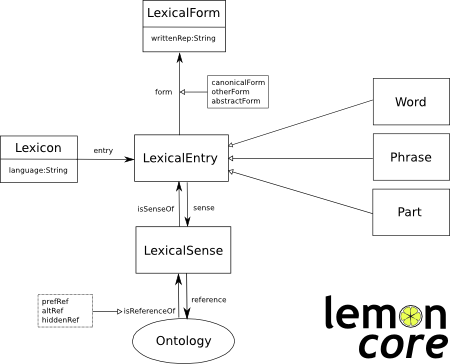

This document describes proposed best practices for transforming multilingual terminologies, particulary those available in TBX format, into a Linked Data version. The best practices are exemplified using the well-known IATE resource. The document describes the models and vocabularies to be used and describes the conversion using a running example.
This document was published by the Best Practices for Multilingual Linked Open Data community group. It is not a W3C Standard nor is it on the W3C Standards Track.
There are a number of ways that one may participate in the development of this report:
This document provides guidelines on how to convert terminologies represented in the Term Base eXchange (TBX) into the Resource Description Framework (RDF). TBX is an open standard that has been published by the Localization Industry Standards Association (LISA). The standard is identical to ISO standard 30042. This document on the one hand describes the vocabularies that are recommended to be used in doing this conversion and describes the structure of the resulting RDF. It builds on standard W3C vocabularies and other vocabularies that are currently in the process of standardization. The conversion has been implemented in the form of a software package that can be used by anyone (see here).
The following table provides an overview of the vocabularies used in the conversion. Most vocabularies are W3C recommendations or near standards developed by a working group.
| Model | Prefix | Model reference URL |
|---|---|---|
| lemon-ontolex | lemon-ontolex | http://www.w3.org/ns/lemon/ontolex# |
| SKOS | skos | http://www.w3.org/2004/02/skos/core# |
| RDF-schema | rdfs | http://www.w3.org/2000/01/rdf-schema# |
| DCAT | dcat | http://purl.org/dc/terms/ |
| VOID | void | http://rdfs.org/ns/void# |
| PROV-O: The Prov Ontology | prov | http://www.w3.org/ns/prov# |
| LIDER TBX Ontology | tbx | http://tbx2rdf.lider-project.eu/tbx# |
The following list provides an overview of the main elements of a multilingual terminology represented in TBX format.
Lexical resources such as WordNet are one of the most important types of data sources for linguistic research. Such resources are complementary to another type of Web resources that contain a large amount of taxonomic data described in RDF such as DBpedia . Bridging the gap between these two types of resources means that rich linguistic information found in lexical resources (e.g., lexicons) can be used to describe information on the Web, enabling novel applications such as question answering over Linked Data . This leads to a new type of resources that is termed ontology-lexicon, which consists of an ontology describing the semantic and taxonomic nature of the domain and a lexicon describing the behaviour of the words in a language used to refer to the semantics captured by the ontology.
In that context lemon (Lexicon Model for Ontologies) was proposed to provide a de facto standard to be used by a cloud of lexical linked data resources such as WordNet, BabelNet, and UBY, among many others. The lemon model’s core consists of the following elements depicted below:

A lexical entry, which may be a word, multiword expression or an affix, is assumed to represent a single lexical unit with common properties, especially part-of-speech, across all its forms and meanings.
A form represents a particular version of a lexical entry, for example a plural or some other inflected form. A form may have a number of representations in different orthographies (e.g., spelling variants) or media (e.g., phonetic representations).
The sense refers to the usage of a word with a specific meaning and can also be considered as a reification of the pair of a lexical entry used with reference to a given ontology. The sense is also used as a node for the annotation of many pragmatic features such as register.
The reference is an entity in the ontology that the entry can be interpreted as, or alternatively that can be represented by using the lexical entry.
The main data elements described above have been mapped into RDF using the above mentioned vocabularies as follows:
In this section we illustrate the transformation by providing one running and real example taken from the IATE terminology.
Converting terminological concepts and terms
The header is transformed into RDF as follows:
Transforming terminological concepts
The term entry in lines 14 -18 would be represented in RDF by a skos:Concept in RDF.
This is shown by the following RDF snippet, where the the subject field of the terminological concept is specified via the property subjectField:
Our TBX example document has two language sets for English and German. In the lemon model, a lexicon is regarded as language-specific and as comprising lexical entries for a single language. Thus, in order to represent lexical entries in different languages, one lexicon per language needs to be created. In our example, as there are terms for English and German, two lexica need to be created. These lexica contain one lexical entry each, corresponding to the terms Zuständigkeit der Mitgliedstaaten and competence of the Member States. The English entry generated from lines 19--25 would look as follows:
Note that the entry specifies the reliability code (i.e. 3), the type of term (i.e. full form), the canonical form (i.e. competence of the member states), and the language (i.e. en). Each lexical entry is assumed to have a LexicalSense that represents the meaning of the entry. In this case the meaning is established by reference to the terminological concept :IATE_84.
We would generate a similar entry for German, which is identified as :Zust\%C3\%A4ndigkeit+\-der\-+Mitgliedstaaten-de and is an entry in the corresponding German lexicon. Note that both entries have a reference to :IATE_84 and are thus cross-lingual equivalents.
Components of a composite term are represented as constituents of the composite term. A component is linked to its corresponding lexical entry by way of the correspondsTo relation. In the example below, the lexical entry Zust%C3%A4ndigkeit+der+Mitgliedstaaten-de is linked to an object Zust%C3%A4ndigkeit+der+Mitgliedstaaten-de#ComponentList representing its decomposition via the property correspondsTo. This object Zust\%C3\%A4ndigkeit+der+Mitgliedstaaten-de#ComponentList is linked to its components via the property constituent. For each component, its part-of-speech and grammatical number (if applicable) is indicated. The decomposition of the German entry for Zuständigkeit der Mitgliedstaaten (lines 32-47 in the sample TBX document) is represented in RDF as indicated below:
Finally, we discuss how to represent provenance information, in particular provenance information as expressed via transaction elements in TBX. We rely on the PROV-O ontology for this, as this is the W3C recommended vocabulary to `represent and interchange provenance information generated in different systems and under different contexts´. Some provenance information is given on lines 48--53 of our TBX example document and from this we generate the following representation:
As a proof-of-concept for the conversion, we have converted the IATE (InterActive Terminology of Europe) into RDF format. The data is available here. We have also converted the European Migration Network glossary. The data is available here.
In order to show how the model can be used, we give a number of queries that demonstrate data access to the model.
A converter has been implemented to map TBX/XML input into RDF using the vocabularies described above. The converter has been implemented as a Java program that reads in the document and builds the DOM tree. The DOM tree is traversed and elements are mapped to appropriate object-oriented datastructures. These datastructures are then serialized as RDF. The code is available as GitHub project tbx2rdf
As additional input to the program, a file can be provided that contains mappings of specific XML elements and attributes used in the TBX document to URIs representing properties. If no file is specified the default file "default.mappings" is used. This option is only available when directly executing the Java program, not via the Web service.
A service for converting TBX to RDF is available here.